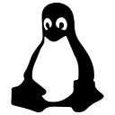

Gripper Vision AI
Prototype développé chez Eurostyle Systems à Tanger. OpenCV segmente la pièce et extrait ses caractéristiques géométriques. Une forêt aléatoire propose un type de préhenseur, affiché avec la segmentation dans Streamlit.
Portfolio ENSAM Rabat
Étudiant ingénieur en IA et data science
Je développe des modèles de machine learning et des applications, avec un intérêt particulier pour la vision par ordinateur.

Étudiant en deuxième année du cycle ingénieur à l’ENSAM Rabat (2026–2027), je me spécialise en data science, intelligence artificielle et santé digitale. Je développe des modèles de machine learning, des pipelines de données et des applications web.
À l’été 2026, j’ai effectué un stage d’initiation de deux mois chez Eurostyle Systems à Tanger. J’y ai développé un prototype qui propose un type de préhenseur à partir d’une photo de pièce plastique injectée.

LinuxDu prototypage en milieu industriel à l’analyse de données.
Prototype développé chez Eurostyle Systems à Tanger. OpenCV segmente la pièce et extrait ses caractéristiques géométriques. Une forêt aléatoire propose un type de préhenseur, affiché avec la segmentation dans Streamlit.
Comparaison de K-Means, de la classification hiérarchique de Ward et de DBSCAN sur les dépenses de 440 clients du jeu de données UCI Wholesale Customers. Le modèle retenu, K-Means à deux groupes, obtient une silhouette de 0,2903 sur l’ensemble des clients.
Modèle de classification comparant Random Forest et Decision Tree avec optimisation GridSearchCV. Accuracy de 94% sur dataset UCI.
Pipeline d'analyse de données avec Pandas : nettoyage, visualisation avec Seaborn/Matplotlib, insights statistiques.
Architecture de traitement de journaux IoT en temps réel avec stockage distribué Redis (cache) + Cassandra (persistance).
Site personnel réalisé en HTML, CSS et JavaScript, avec une mise en page responsive, des animations et un CV téléchargeable.
· 4 h
Je recherche un stage technique en data science, machine learning ou développement backend.
Envoyer un message